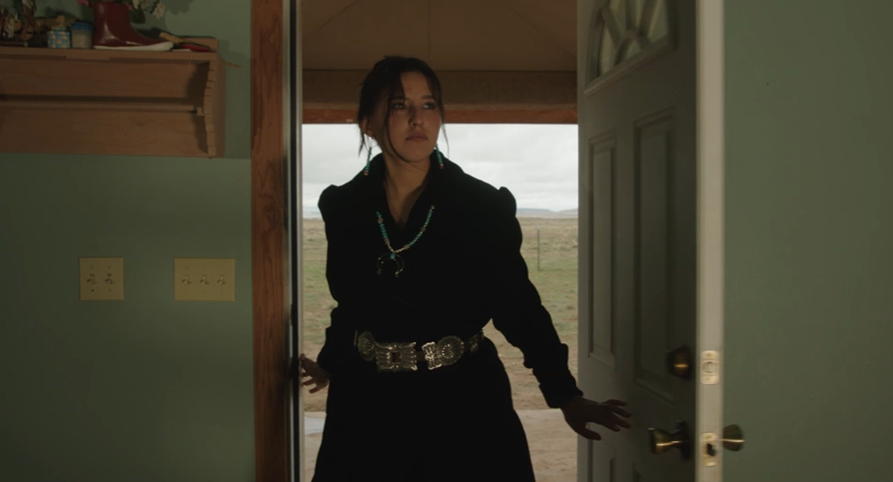
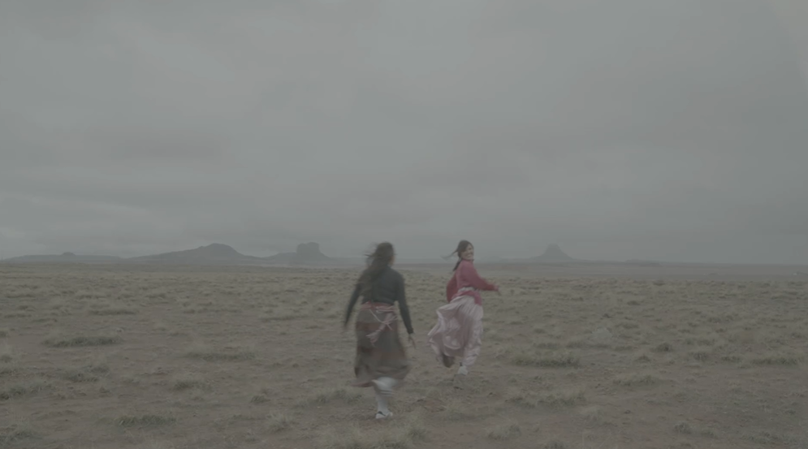
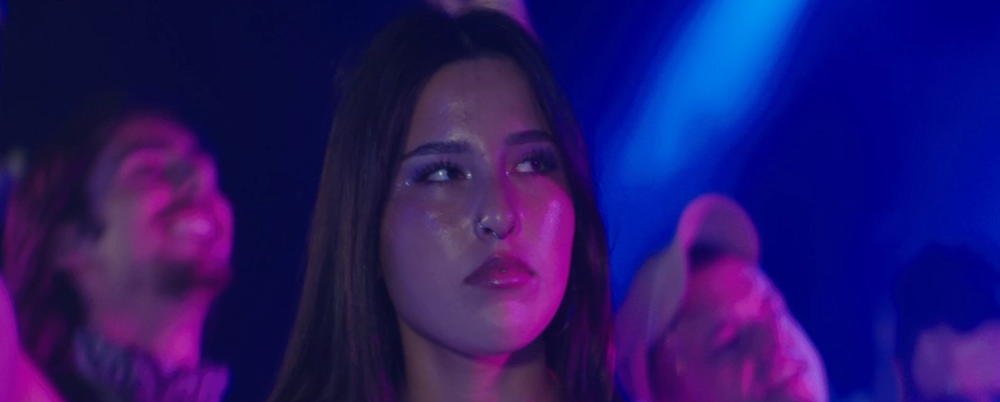
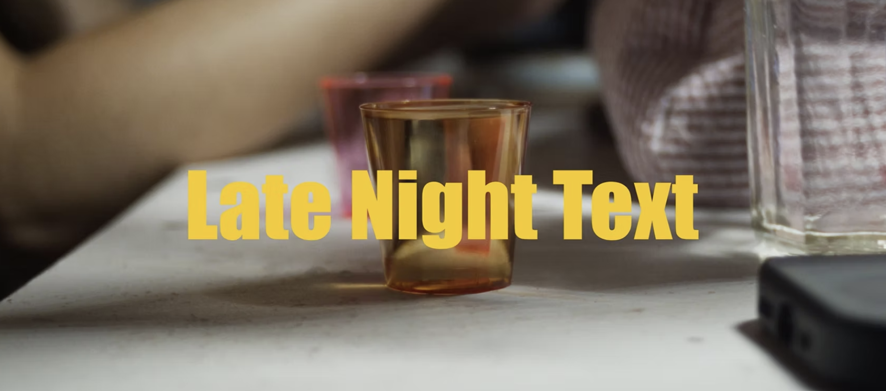
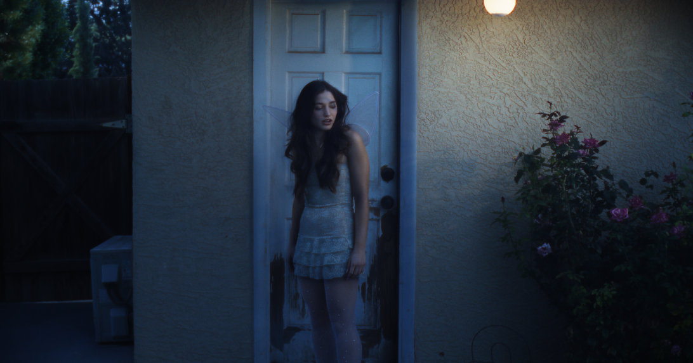
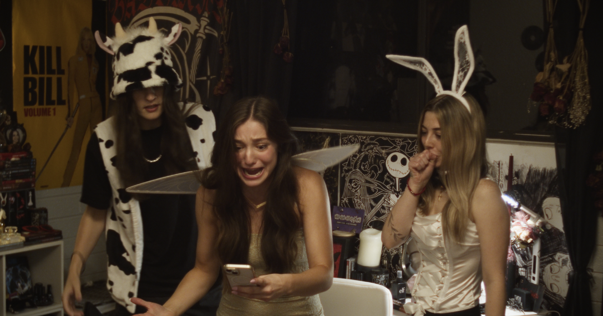
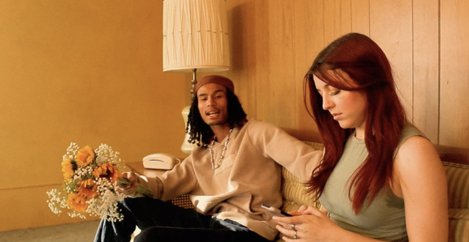
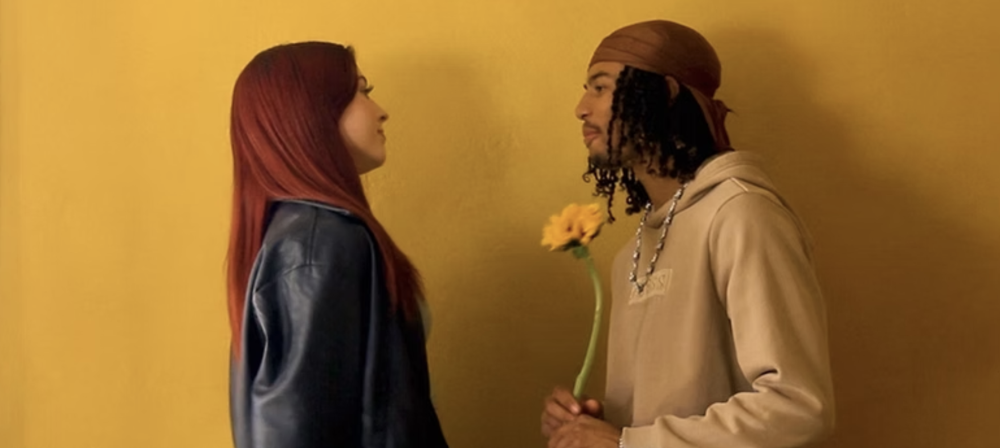
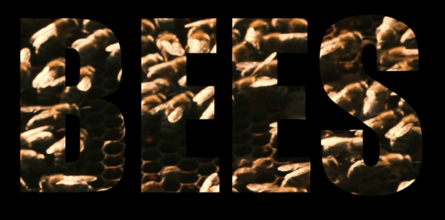

Directing Projects
Abstain
Abstain is a drama short film that explores the story of a young indigenous woman who is trying to overcome her substance abuse addiction. I served as the director and writer for this project, and had the opportunity to work with a talented cast and crew to bring this powerful and emotional story to life. This project was a great opportunity for me to explore a different genre and challenge myself as a director. I am grateful for the experience of working on such a meaningful and impactful project. I can't wait to see how it turns out.
Late Night Text
Late Night Text is a comedy short film that follows the story of a young woman named Stevie, who accidentally sends an inappropriate text to her boss instead of her crush. She goes on a journey with her friends to break into her boss's house to prevent him from seeing the message. I served as the director, writer, producer, and editor for this project, and had the opportunity to work with a talented cast and crew to bring this fun and relatable story to life. I am grateful for the experience of working on such a creative and entertaining project, and I am proud of the final product that we created together.
BEES: Music Video
BEES is a music video for the song "BEES" by Reverend. I served as the director, producer, and editor for this project, and had the opportunity to work with a talented cast and crew to bring this unique and visually striking music video to life. This project was a great opportunity for me to explore a different genre and challenge myself as a first time director. I am grateful for the experience of working on such a creative and innovative project, and it was a great first project to direct. I am proud of the final product that we created together, and I can't wait to see how it is received by audiences.








